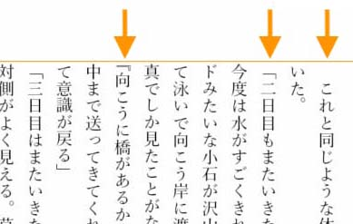
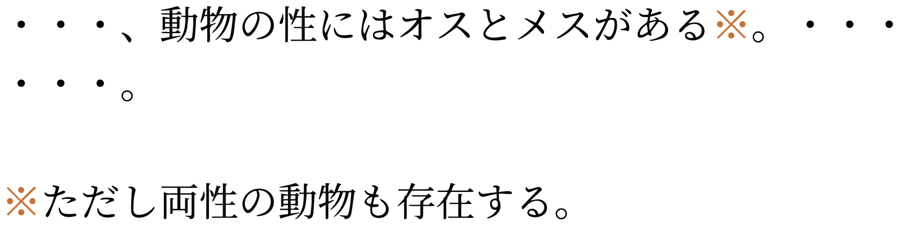

Kanji, Hiragana, Katakana, & Latin orthography notes
Updated
24 January, 2024
This page brings together basic information about the Japanese writing system, which includes the use of Kanji, Hiragana, Katakana and Latin scripts, and its use for the Japanese language. It aims to provide a brief, descriptive summary of the modern, printed orthography and typographic features, and to advise how to write Japanese using Unicode.
The 'Japanese orthography' described here is a mixture of 4 scripts which are all used together for any Japanese text: Han (kanji), Hiragana, Katakana, and Latin. Together they are what is used to write the Japanese language.
日本語
"Kanji characters were introduced to Japan around the 3rd century, it is thought from Korea. Until the 7th or 8th century, the Japanese language was written exclusively in these Chinese characters. Initially these were used phonetically to represent similar-sounding Japanese syllables, regardless of their meaning in written Chinese. However, the process of writing Japanese solely in kanji was laborious; each symbol consisted of a number of strokes and only represented one syllable. Two simplified forms of writing began to emerge around the 7th century. The modern hiragana script developed from a simplified cursive style originally developed by women, who were discouraged from learning kanji, and katakana was developed by Buddhist scholars who wrote only one element of each kanji symbol as a form of shorthand."s
Four scripts are used, mixed together to write Japanese: kanji (han), katakana, hiragana, and latin. Essentially, Japanese writing is a mixture of an ideographic and a syllabic script. Non-latin letters typically represent a spoken syllable. See the table to the right for a brief overview of features for the modern Japanese orthography. The character count reflects a typical set of characters needed for everyday reading and writing: there are thousands more kanji characters that could be added for other purposes.
Text can be written horizontally or vertically. The visual forms of characters don't interact, but rotated and alternative glyph forms are needed to enable the switch between directions.
Words are not separated by spaces or any other character. There is no case distinction. The visual forms of characters don't interact.
Kanji characters are mostly derived from the Chinese Han script. They are used for word roots.
The term kana covers two syllabaries that are used with kanji characters (see Han) to write Japanese. See the table to the right for a brief overview of features, taken from the Script Comparison Table.
One syllabary is hiragana, the other katakana. In both cases, the repertoire includes 5 independent vowel sounds, one nasal sound, and the rest are consonant+vowel combinations. There are a small number of additional characters with particular functions, such a katakana lengthening mark, and a few small characters for representing medial glides.
The Latin (romaji) characters and much of the punctuation corresponding to the ASCII range is available in fullwidth sizes that match the dimensions of the kanji and kana.
These are sounds for the standard Japanese language.
Click on the sounds to reveal locations in this document where they are mentioned.
Phones in a lighter colour are non-native or allophones.
Vowel sounds
Plain vowels
Consonant sounds
labial
dental
alveolar
post-
alveolar
palatal
velar
uvular
glottal
stop
pb
td
kɡ
affricate
t͡sd͡z
t͡ɕd͡ʑ
fricative
ɸ
sz
ɕʑ
ç
h
nasal
m
n
ɲ
ŋ
ɴ
approximant
w
j
trill/flap
r
Tone
Japanese is not a tonal language.
Structure
The Japanese language, unlike many neighouring languages, uses polysyllabic words, and has no tones. It is an agglutinative language, and doesn't use spaces or other characters to separate words.
Wikipediaw,#Sentences,_phrases_and_words has a nicely written summary of the structural characteristics:
Text (文章bunshō) is composed of sentences (文bun), which are in turn composed of phrases (文節bunsetsu), which are its smallest coherent components. Like Chinese and classical Korean, written Japanese does not typically demarcate words with spaces; its agglutinative nature further makes the concept of a word rather different from words in English. The reader identifies word divisions by semantic cues and a knowledge of phrase structure. Phrases have a single meaning-bearing word, followed by a string of suffixes, auxiliary verbs and particles to modify its meaning and designate its grammatical role. In the following example, phrases are indicated by vertical bars:
太陽が｜東の｜空に｜昇る。
taiyō ga | higashi no | sora ni | noboru
sun SUBJECT | east POSSESSIVE | sky LOCATIVE | rise
The sun rises in the eastern sky.
Romanised Japanese text may add spaces between bunsetsu phrases, with hyphens separating suffixes (eg. higashi-no), or may also separate the suffixes using spaces (ie. higashi no).
It is common for Japanese words to repeat morphemes, such as mukashi mukashionce upon a time. Often, this introduces a feature called rendaku, whereby the initial consonant of the repeated sound changes, such as in hitobitopeople.
Characters
Kanji characters
Kanji characters are mostly derived from the Chinese Han script. They are commonly used for word roots and compound words.
The compound word static electricity (seidenki), written with kanji.details
静電気
Kanji characters are primarily constructed from characters that each represent a phonetic symbol. Some have pictographic origins that are still evident, whereas others have a more complicated structure.
In reforms in the mid 20th century, the Japanese repertoire was standardised on around 2,000 core characters, however standardised computer character sets support a few thousand more.
The Jōyō kanji character set (常用漢字) is intended as a literacy baseline for those who have completed compulsory education, as well as a list of permitted characters and readings for use in official government documentswjy.
A second list, called Jinmeiyō kanji (人名用漢字), is a supplementary list of 863 characters that can legally be used in registered personal names in Japan.wj
The number of characters in these lists changes from time to time. The Wikipedia articles for Jōyō and Jinmeiyō kanji provide useful timelines indicating changes over the years.
In addition to the basic lists, there are a number of variants and traditional forms that need to be considered. Note also that the jōyō character set only provides a baseline for the educational process. School leavers still have more characters to learn to achieve a working competency.
Show kanji characters in jōyō and jinmeiyō lists in 2020.
The Jōyō traditional forms include 60 kanji shapes that Unicode includes in the CJK Compatibility Ideographs block. Normalisation operations (which in some systems may happen automatically, or during things such as cut & paste) convert them to characters in the main CJK block. This makes them unstable, and best avoided. The following list shows the compatibility character shape to the left, and the normalised shape to the right.
Japanese uses two syllabaries: hiragana and katakana. The vowel sounds u and i are often elided between non-voiced consonants, or at the end of a word.
Katakana characters are typically used for foreign loan words and names, such as the word 'text'. They are also used for things such as scientific names of plants and animals, onomatopoeic sounds, telegrams, and some female names.
The word text, written with katakana syllables.details
テキスト
Hiragana is used for indigenous Japanese words, such as the verb 'to be'.
The word for to bedesu, written with hiragana syllables.details
です
It is also used for grammatical endings after a word root written using kanji characters.
The word for to collectatsumarimasu, with the verb root atsu written using a kanji character, and the remainder in hiragana expresssing the grammatical present-tense.details
集まります
The basic syllabary includes 5 independent vowel sounds, one nasal sound, and the rest are consonant+vowel combinations. In these lists we show hiragana (first) and katakana (second) together.
Voiced consonants are indicated by attaching a dakuten mark (looks like a quote mark) to the unvoiced shape. Unicode provides precomposed code points for every combination of syllable+dakuten.
The ‘p’ sound is indicated in a similar way by the use of a han-dakuten (half-dakuten).
ぱパ␣ぴピ␣ぷプ␣ぺペ␣ぽポ
The Unicode hiragana block does contain separate code points for dakuten combining marks and modifiers, but these are not normally used in text. However, if Unicode NFD normalisation is applied to text, the dakuten and han-dakuten are split from the base and the combining marks are used.
゙␣゚␣゛␣゜
Long vowels
あ␣い␣う␣え␣お␣ー
Various strategies are used to represent long vowels, and they tend to differ between hiragana and katakana. This elongation is phonemically significant.
In hiragana, the long vowels aː, iː, uː, and eː are written by adding a corresponding vowel.
おかあさん
おにいさん
すうがく
おねえさん
In words of Chinese origin eː may be written 'ei'.
ていねい
The long oː is usually written 'ou', but is sometimes written 'oo'.
おはよう
おおきい
In katakana, long vowels are indicated using
ー [U+30FC KATAKANA-HIRAGANA PROLONGED SOUND MARK]. This character is used predominantly with katakana, but occasionally also with hiragana.uk,720
ビール
ボール
エスカレーター
In a few exceptions, katakana uses a similar approach to hiragana.
The basic set of kana syllables is completed by a number of small forms used for medial glides, foreign sounds, and gemination, and a vowel lengthener.
ぁァ␣ぃィ␣ぅゥ␣ぇェ␣ぉォ␣ゃャ␣ゅュ␣ょョ␣ゎヮ␣っッ
Small versions of や, ゆ, and よ are used to form syllables such as
きゃkyakʲaきゅkyakʲuきょkyokʲo
It is also used to represent a glottal stop in a broken-off word.
あっ
The small vowel syllables shown above are typically used for transcribing unusual sounds, such as lengthening a preceding vowel, or transliterating foreign sounds, without creating a new syllable.
ふぁん
シフォン
ティー
はぁぁ
Yotsugana
Over time, certain voiced sounds have merged in several important dialects, as shown in fig_yotsugana.
ぢ
じ
づ
ず
Tokyo (standard)
d͡ʑi~ʑi
d͡zɯᵝ~zɯᵝ
South Tohoku
d͡zɯᵝ
Kōchi (Hata, Tosa)
di~d͡zi
ʑi
dɯᵝ~d͡zɯᵝ
zɯᵝ
Kagoshima
d͡ʑi
ʑi
d͡zɯᵝ
zɯᵝ
Okinawa
d͡ʑi
Yotsugana pronunciation around Japan. (source wy.)
The orthographic reform shortly after World War 2 recommended the use of only じ [U+3058 HIRAGANA LETTER ZI] and ず [U+305A HIRAGANA LETTER ZU], except in circumstances where an unvoiced sound has become voiced because of:wy
compounding (rendaku), eg.
神無月
which combines かん, な, and つき, would be written in hiragana as かんなづき
repetition, eg.
続
is written in hiragana asつづく
Archaic characters
A number of characters in the kana blocks are no longer used in modern text, except in counter styles (see lists).
These characters were dropped by an orthographic reform shortly after World War 2.
ゐヰ␣ゑヱ␣ヸ␣ヹ
Halfwidth katakana
Unicode has a set of halfwidth katakana forms for legacy encoding roundtrips. In principle, these characters should not be used. The normal, fullsized characters should be used instead.
Text can be written horizontally, left to right, or vertically with lines progressing from right to left. Vertically set text is still common in Japan; most novels, newspapers and magazines are set vertically.j,#h-note-15
Sometimes, vertically set text may contain sections or items that are set horizontally. For example, in newspapers, headings are normally set horizontally above the body of an article which is set vertically, and captions are usually horizontal.
fig_mixed_direction shows pages from a magazine that mix directions on the page.
Vertically set pages with mixed direction text. Click on image for larger size.
Older horizontally set texts in Japanese also ran right to left.
Different conventions are applied for horizontal and vertical text, for example in terms of characters used and treatment of embedded romaji and numerals. Apart from the question of what gets rotated and what does not, the two writing modes may show different preferences for emphasis marks, brackets, numbers, and so forth. This means that it is not usually appropriate to simply switch the direction of the text without making additional changes.
In vertical text (only) decisions have to be made about how to present embedded romaji text and numbers. Romaji typically runs down the page, with proportionally-spaced characters rotated 90º to the right. However, acronyms are often written using upright, fullwidth characters.
Romaji text with characters rotated (left), and an acronym with upright letters (right).
Numbers, and sometimes text, may also run horizontally within a vertical line. This is most common with double-digit numbers, such as in dates. The width of the horizontal text should not normally exceed the width of the surrounding vertical text (ie. it should fit in the width of a character space). This is referred to as tate chu yoko.
Numbers arranged horizontally within a vertical line.
The Japanese scripts are not cursive, and when using precomposed kana (which is the norm) involve no context-based shaping or positioning.
The orthography has no case distinction.
By default, all kanji, hiragana, katakana, and punctuation characters are drawn inside a character frame that is square and the same size for all characters. The box containing the actual symbol is called the letter face, and there should be some space left between the letter face and the character frame. There may be variations, particularly for small kana, punctuation, etc., in the size of the letter face.
Because of the regularity of the character frame size, it can be used to measure the size of the text area or other parts of a page (horizontally or vertically).
Character frame and letter face.
In principle, Japanese characters are set solid, ie. with no space between the character frames. However, text alignment and justification can make adjustments to the placement of characters in the direction of the line flow. See justification and letterspace.
Font styles
The kanji characters are derived from Han characters originally used in Chinese. Many of the Japanese and Chinese characters are unified to the same code point in the Unicode repertoire, however over time small but systematic, language-related changes have appeared in the glyph shapes of some characters compared to their Chinese equivalents. It is important to choose fonts that present the user with the correct glyphs. fig_ja_zh_fonts provides some examples.
The same code points, displayed with a Japanese font (top) and Chinese font (bottom).
Besides the need to choose fallback fonts that match the language of the text, Japanese also has some recognisable font styles. Two well-known font styles are often called Mincho and Gothic. The former has strokes with fine gradations of stroke width, whereas the latter has darker strokes with little gradation. For fallback on the Web, these styles are usually equated with serif and sans-serif, respectively, although serifs are not actually involved.
The same text displayed using the Hiragino Mincho Pro font (top) and the Hiragino Kaku Gothic Pro font (bottom).
Another useful type of font style relates to the endings of Gothic font strokes, which can be flat or rounded.
A typical Gothic font has strokes with squared-off endings (top), but sometimes a font with rounded stroke endings is preferred (bottom).
Context-based shaping & positioning
Horizontal vs. vertical transformation. Characters such as small kana and punctuation occupy different locations within the character frame in horizontal and vertical text.
Positioning of small ょ and the full stop in horizontal and vertical character frames.
fig_small_kana shows how in horizontal text small kana are centred horizontally in the character frame but are vertically below centre; in vertical text they are centred vertically, but aligned right.
The full stop also switches from bottom-left in horizontal text, to top-right in vertical.
These are differences that cannot be produced by rotating glyphs, but require special glyphs in the font which are applied when the directional context is detected.
Positioning of decomposed diacritics. When kana use a dakuten or han-dakuten there can be significant overlap with the base character. See fig_kerning_nfd.
Syllabic characters where the dakuten or han-dakuten overlaps the base.
This overlap needs to be unchanged whether the diacritics are part of a single glyph or are separate code points in decomposed text. In the latter case, careful positioning of the diacritics is required.
Shaping of punctuation. Many punctuation marks need to have different shapes for Japanese and non-Japanese text. Often these differences are due to the fact that punctuation for Japanese is based on the em-box, rather than the Latin baseline, cap-height, or x-height. A description of many such differences can be found in Ken Lunde's Proposal to add standardized variation sequences.
Transforming characters
Japanese kanji and kana is a monocameral orthography, and no transforms are needed to convert between different case forms for a given letter. However, romaji characters are cased.
Other transforms may be applied to convert between half-width and full-width characters. This can be useful for converting to and from fullwidth Latin and punctuation, and is sometimes useful for converting small kana characters to full-sized versions.
The latter transformation is common for ruby text (see inlinenotes), where small kana are converted visually to full-sized to aid with readability of the text, given that ruby text is written in small character sizes.
To achieve this in web pages use the text-transform CSS property@CSS Text specification,https://www.w3.org/TR/css-text-3/#transforming in your style sheet with the following values.
full-width (Not yet supported by browsers.)@CSS Text specification,https://www.w3.org/TR/css-text-3/#transforming
Transforms all ASCII characters into fullwidth forms.
full-size-kana (Not yet supported by browsers.)@CSS Text specification,https://www.w3.org/TR/css-text-3/#transforming
Converts all small Kana characters to the equivalent full-size Kana.
Eg. the following converts the visual appearance (only) of small kana in ruby text to fullwidth characters, except in headings (where the characters are larger): rt { font-size: 50%; text-transform: full-size-kana; }
:is(h1, h2, h3, h4) rt { text-transform: none; /* unset for large text*/ }
Graphemes
Grapheme clusters
Since there are no combining marks or decompositions in typical Japanese text, graphemes correspond to individual characters for kanji and kana.
Unicode grapheme clusters can therefore be applied to Japanese text without problems. There are no special issues related to operations that use grapheme clusters as their basic unit of text.
Codepoint order
The ordering of codepoints in a Japanese grapheme is generally not relevant, because graphemes are usually single, syllablic code points. When combining characters are used, there is usually just one.
Punctuation & inline features
Word boundaries
Japanese rarely uses spaces. In the sample text there are gaps around punctuation, but these are produced by a lack of 'ink' in parts of the square character glyphs.
You can verify this by clicking on this example. The character list popup shows that only four characters make up this sequence, and none are spaces.
い。（こ
Gaps of this kind may also be reduced during justification and line alignment.
In general, word boundaries are not important for line-wrapping, however occasionally text such as headings may be wrapped at word boundaries in order to better balance the text.
Word boundaries are identified when users select screen text, eg. by double-clicking inside a word. Heuristics and dictionaries are needed to identify the boundaries of words in such situations. Note, also, that words in Japanese are very often a mixture of kanji characters followed by hiragana. The word boundary detection needs to treat the various scripts as a unified orthography.
Phrase & section boundaries
Japanese uses the following separators at the sentence level and below.j,#differences_in_vertical_and_horizontal_composition_in_use_of_punctuation_marks Some of the punctuation looks like that for Latin (eg. parentheses, commas, and full stops), but the width of the punctuation is likely to include significant amounts of white space, so that punctuation characters occupy the same space as han characters.
、 [U+3001 IDEOGRAPHIC COMMA] and 。 [U+3002 IDEOGRAPHIC FULL STOP] are the norm for vertical text, however two alternative conventions as applied to horizontal text: especially in books that mix Japanese and western text, such as books on science and technology, the former may be replaced by ， [U+FF0C FULLWIDTH COMMA] and ． [U+FF0E FULLWIDTH FULL STOP]. Often, however, the ideographic full stop is retained, since it is more visible and looks better (this convention has been adopted for Japanese official publications).j,#differences_in_vertical_and_horizontal_composition_in_use_of_punctuation_marks
As the table shows, these punctuation marks require dedicated glyphs in the font, and cannot be achieved by simply rotating the glyph.
Japanese also uses the following doubled exclamation/question marks. They remain upright in vertical text.
Note that this list doesn't include italicisation or bolding of text. (1) and (2) are popular approaches. (5) is not as common, but is a traditional approach with some value attached.
Different boten marks are used in horizontal and vertical text. Typically, bullets are used above characters in horizontal text, and sesame dots are used to the right of characters in vertical text.j,#composition_of_emphasis_dots
The boten mark is centre-aligned with the base characters in horizontal text, and middle-aligned in vertical text, and doesn't normally appear alongside full stops, commas, or brackets.j,#composition_of_emphasis_dots
Boten marks used for emphasis in horizontal and vertical text. (source)
Embedded text in other languages would have boten marks displayed on the same side as for Japanese.
Abbreviation, ellipsis & repetition
tbd
Abbreviation
ヶ␣〆␣ゟ␣ヿ␣〼
Japanese has a number of logograms used as abbreviations.
ヶ [U+30F6 KATAKANA LETTER SMALL KE] is a reasonably common shorthand for the character 箇, which is a counter for months, places or provisions. It is pronounced ka or ko, and is not related to the larger kana ケ, which is pronounced ke. See also @Wikipedia,https://en.wikipedia.org/wiki/Small_ke.
三ヶ月
３ヶ
〆 [U+3006 IDEOGRAPHIC CLOSING MARK]
is primarily used as a short form of ʃime from the verb 閉める. For example, it can be used as follows in place of the word 締切.@Wiktionary,https://en.wiktionary.org/wiki/〆#Japanese
〼 [U+303C MASU MARK] is derived from a semi-pictogram for a small wooden measuring box called masu. It then moved on to represent a shorthand for the grammatical ending for the present tense verb, which has the same sound.
Repetition
々␣〻␣ゝ␣ゞ␣ヽ␣ヾ
Japanese has a number of iteration marks that repeat the previous syllable or word. The repeated sound may differ slightly due to rendaku sound changes.
It is not common, but it is possible to find horizontal text that repeats the iteration mark in order to repeat multiple characters.
馬鹿々々しい
See also @Wikipedia,https://en.wikipedia.org/wiki/Iteration_mark#Japanese.
〱␣〲␣〳␣〴␣〵
Japanese also has a set of graphemes to indicate repetition of multiple characters, although they are mostly obsolete these days.@Wikipedia,https://en.wikipedia.org/wiki/Iteration_mark#Japanese They are only used in vertical text, and they take up 2 character spaces.
The Unicode Standard also provides half forms, which can be combined to span the 2 character distance.
Iterators for multiple syllables in vertical text. The last item uses 2 half glyphs.detailsまあ〱わざ〱離れ〲いろ〳〵
Inline notes & annotations
Japanese has a few ways of representing inline notes and annotations.
Ruby
Various ways of arranging inter-linear annotations alongside text fall under the rubrique of ruby (named from the British print size originally used for the annotations). These include mono-ruby, jukugo-ruby, and group-ruby, and they are described in detail below.
Ruby is commonly used to indicate the pronunciation of ideographic characters used in Japanese, as it cannot usually be guessed and so can pose difficulties for those learning the language. For these cases, mono-ruby is most commonly used, however a variant, jukugo-ruby, is sometimes applied to compound nouns (which are called jukugo in Japanese).
Where sequences of kanji characters do not have the same pronunciation as the sum of their parts (called jukuji), such as the following two words, group ruby is used to represent the sound.j,#h-note-109
Click on the words to see their composition.
田舎今日
Ruby annotations are also used to provide brief indications of the meaning of words or characters. These annotations typically use the group-ruby approach. The most typical example of this is attaching ruby text to a kanji compound word to indicate a corresponding loan word in katakana (see fig_group_ruby).j,#id221 Group ruby is also used to indicate the reading or the meaning of a Western word used in base text, or where a synonymous Western word in Latin characters is attached as a ruby annotation to a Japanese word (see Figure 112).
The rest of this section describes features that are generally common to all forms of ruby, before we move on to examine the differences in following subsections.
All annotations appear within the standard inter-line space for the page, and don't create extra line height if they only appear on a single line. The inter-line space is usually set at an appropriate size to accommodate annotations.
Unlike Chinese, it is common to find annotations applied just to specific words, rather than annotating the whole text.
Ruby annotations normally appear above horizontal lines of text, and to the right of vertical lines. Occasionally, both phonetic and semantic annotations are applied to the same base text, in which case the annotations appear on both sides of the base. A typical scenario in these cases would be to have mono-ruby above/right of the base, and group-ruby below/left.j,#choice_of_sides_for_ruby_with_respect_to_base_characters
Double-sided ruby.
The character frame of kana annotations is usually half that of the base character. Occasionally, annotations are compressed in one direction (depending of direction of writing) so that 3 fit over a single base character.j,#fig2_3_10 In large text (12pt or more), such as headings, the size of the annotation may be less that half that of the base.j,#fig2_3_11
Mono-ruby
Usually applied to kanji base characters, each base character is associated individually with an annotation.
Annotations are normally centred over the base character in horizontal text, and with the middle of the base character in vertical text. (called nakatsuki). An alternative, used only in vertical text, is to align the annotation with the top of the character frame of the base character (katatsuki)j,#id227, as in the righthand example in fig_jukugo.
Mono-ruby for detective novel, in horizontal and vertical text (colouring added for illustrative purposes). details
推理小説
Since the annotation characters are usually 1/2 the size of the base characters, 3-character annotations require more space that the underlying kanji. Internally to the sequence, this will produce a gap between the base characters, since annotations cannot overlap (see fig_mono_ruby).
At either end of the sequence, either a gap is opened up between the base character with the long annotation and its neighbour (see fig_overhang), or the annotation may overhang the neighbouring base characters. Simpler implementations produce gaps, but allow annotations to overhang any blank parts of adjacent fullwidth punctuation characters. More sophisticated applications may allow overlap of kana or other characters, though never kanjij,#232, but may also have to deal more complicated algorithms, such as balancing space on either side of the ruby sequence, or deciding what can and cannot be overlapped, and to what extent.j,#id229j,#adjustments_of_ruby_with_length_longer_than_that_of_the_base_characters
Alternative ways of dealing with potential overhang either side of the ruby sequence.
At line start or line end, long annotations do not protrude past the line edge – meaning that there will be a gap between the base character and the line edge.
Gaps produced at line end and line start by wide annotations.
Lines can be broken in the middle of a sequence of mono-ruby annotations, since an associated base and annotation are kept together.
Group ruby
Applies when the base is a sequence of characters, mapped to a single annotation. The base can be a sequence of either kanji or other characters, as can be the annotation.
When the annotation is shorter than the base, and the annotation is composed of kana or kanji characters, they are typically spread out with two units of equal spacing between each character and one at either end. The end space should never exceed half the width of a base character.j,#positioning_of_groupruby_with_respect_to_base_characters
When the base is shorter than the annotation, the inverse applies.
模型mokeimodel and 顧客kokjakuclient with katakana group-ruby annotations indicating loan word alternatives.
If the annotation or the base is not kanji or kana, the text is set solid and centred relative to the other component (see fig_latin_ruby).
Group-ruby involving non-Japanese text.details
編集者henʃuːʃaeditor
Overhang behaviour is the same as described for mono-ruby, as is the handling at line ends when the annotation is longer than the base.
Unlike a sequence of mono-ruby, there is no line-break opportunity inside a group-ruby.
Jukugo-ruby
Where compound nouns (jukugo) occur, special rules for arrangement of annotation characters (so-called jukugo-ruby) can make it appear that they are evenly distributed across the word (see the lefthand example in fig_jukugo), but there are rules about how much and what type of overhang are allowed, which sometimes lead to gaps (see the righthand example of fig_jukugo).
Two examples of distributed annotations in jukugo-ruby. On the right, a gap appears in the annotation because of the rules about overhang.
An important feature of jukugo-ruby is that where the full compound noun doesn't fit at the end of a line the base characters wrap one-by-one in the normal way, taking with them the appropriate annotations. The annotation for a single base character is never split across a line break.
It is up to the author whether a word that is actually a sequence or 2 compound nouns is treated as a single jukugo ruby, or as two separate ones.
There are numerous options for overhang and arrangement of jukugo-ruby annotations. They are discussed in detail in JLReq.
Inline ruby
Where text sizes are too small for ruby characters to be easily read, the ruby annotation is typically rendered after the base text, in parentheses.
Inline annotations should normally correspond to full words, even if the sequence of base characters would otherwise be represented using mono-ruby. For example, the inline representation of the word
東京
should be displayed inline as
東京（とうきょう）
and not
東（とう）京（きょう）
Warichu
Warichu is a method of adding notes right alongside the relevant text, used particularly in study guides, travel guides, reference books, encyclopedias and manuals. It is generally only used in vertical text, although it is occasionally used in horizontal text for study guides and encyclopedias.
The note is usually surrounded by parentheses (or rarely just spaces), and the text of the note is half the size of the main text and arranged in two parallel lines. The two parallel lines are usually set with no inter-line spacing.
Two examples of warichu.
The warichu lines should be as close to equal in length as possible, given the normal wrapping rules, and if there is a difference, the initial line (right side) should be the longer.
In the rare event that the warichu text breaks across more than one line (see fig_warichu on the right), both lines of the warichu on the first line of the main text should be read completely before continuing to the remainder of the note. The characters in memory follow the normal reading sequence (and use normal characters, too), but the application needs to rearrange the visual order around the line break.
Other punctuation
CLDR 31 lists the following punctuation characters for Japanese. First the fullwidth forms of normal characters.
The hiragana block contains some combining and modifier characters used to represent dakuten and han-dakuten for compatibility with older systems.
゙␣゚␣゛␣゜
The kana blocks each have two marks that are used to indicate repetition of a syllable – one for syllables with unvoiced consonants and another for voiced. The table below shows the hiragana first, then the katakana. In both cases there is a character for repetition of ordinary syllables, and one for repetition of syllables with dakuten.
Lines are normally wrapped between characters – word boundaries usually have no significance for the wrapping. However, occasionally there is a preference to wrap text at word boundaries, eg. to better balance headings.
Line start/end rules
Kanji characters have the ID line-break property, which means that lines can ordinarily break before and after and between pairs of ideographic characters. Note that this class also includes characters other than Han ideographs.
Kinsoku rules. Japanese should also take into account a few rules (called kinsoku rules) which dictate what characters cannot appear at the end or start of a line. The set of characters affected by these rules varies slightly from application to application, but fig_kinsoku_start and fig_kinsoku_start show examples of the kinds of punctuation involved.
There are a number of ways to handle these characters:
Wrap the previous character to the next line with the punctuation.
Leave the punctuation character protruding into the margin (if there is one).
Ignore the kinsoku rules.
Where a gap appears at the end of a line, full justification is usually restored by adding space across the line (see justification).
Small kana. These kinsoku rules may also be used to prevent small kana characters appearing alone at the start of a line. However, this is much more likely to reflect the preferences of the author. For example, the rule may be ignored in narrow newspaper columns.
Kinsoku rules used to prevent a small kana character appearing alone at the start of a line.
Hyphenation
There is no hyphenation at line-breaks for Japanese text.
Text alignment & justification
The preferred arrangement of characters on a line is solid set, ie. each character frame immediately follows the previous one, each with the same width. In principle, in books where the width of the text area on a page is set by counting characters and fixed, paragraphs composed of kanji and kana characters don't need to be justified. Lines break as soon as the line is full of characters, and the whole paragraph has grid lines vertically and horizontally between the characters.
However, a number of factors may introduce a need to introduce justification, from time to time. One such would be punctuation that pulls the last character of the previous line with it to the next line, so that it doesn't begin a line on its own. Another would be web-based text where windows can be stretched, resulting in a situation where the width of a line no longer exactly corresponds to the sum of the width of all the characters on that line. Other situations include lines where proportionally-spaced romaji text breaks the grid effect.
Japanese justifies text using a complex set of rules which adjust the space between characters on a line. Some characters are adjusted before others. Typically in character-based justification, rules are applied to different types of character in successive waves. For example, the algorithm may attempt to reduce the spacing around punctuation first, and only when more adjustment is needed turn to adjusting the spacing between ideographs.
In situations where a set of lines each contains self-contained text, the line content may be stretched to fit the line width, for example in table cells. In this case it is typical to set the first and last characters at the line start and end, respectively, and then apply equal amounts of spacing between all remaining characters. This can result in large gaps, including lines where the two characters are arranged at opposite line ends with nothing between. See fig_distributed_spacing.
Evenly distributed spaces across a line in a table. Sourcej,#id25
Text spacing
This section looks at ways in which spacing is applied between characters over and above that which is introduced during justification.
Inter-character letter-spacing
Letter-spacing is used to achieve balance between items with large and small numbers of characters, such as headings, running heads, and captions. When expanding text, equal amounts of space are added between the character frames of the item with the smaller number of characters.
Examples of headings where letter spacing has been applied.
Reducing inter-character spacing. Although solid set text is normally best for readability, in large print sizes, such as for magazine headings, it may be desirable to reduce the distance between certain characters. This is typically done by reducing the distance between adjacent letter faces.
Sometimes, text may also be kerned by overlapping the character frames by a regular amount across a whole line.
Spacing around alphabetic or numeric phrases
When a run of romaji or ASCII numerals appears in text, it is often set off from the surrounding kanji/kana letters by a small space.
The amount of spacing can vary. JLREQj,#id209 suggests a ¼em space, but sometimes other spaces may be appropriate, such as ⅙em.gh
A Japanese paragraph where text-spacing has and has not been applied. (source)
Such spacing is not needed when the phrase is followed or preceded by punctuation that already has built in space. It also doesn't appear at the line start/end.
To achieve this in web pages use the text-autospace CSS property in your style sheet; don't use space characters. For full details of the options available see the CSS spec.
By default, the browser should insert a gap automatically between runs of ideographs and runs of both non-ideographic letters/numerals. The size of the gap is dependent on the browser, however the CSS spec suggests 1/8 of the width of an ideographic character.
There are 2 ways in which CSS can add gaps. If the text already contains gaps produced using ordinary space characters the CSS will, by default, only add gaps where there are no spaces. If, on the other hand, you want to reduce the width of the those space-based gaps, or apply even spacing throughout, then use the replace value. text-autospace:ideograph-alpha ideograph-numeric replace; will remove any space characters and replace them with a standard width gap, while also creating gaps where the space character hadn't been used.
To remove all synthesised gaps (but leave any manually-typed space characters in place) use text-autospace:no-autospace.
The other values can be used to tweak the results as follows.
Restores the default setting of the browser, ie. it creates a gap between runs of ideographs and runs of non-ideographic letters or numerals., but only inserts a gap where an ordinary space has not been used.
ideograph-alpha or ideograph-numeric (Not yet supported by browsers.)§
These 2 values can be used individually to exclude the other option..
Gives over control of autospace behaviour to the browser, assuming that the browser has implemented special rules that differ from the normal case. Note that if you use this value your text may look different from browser to browser.
Most of the time you will probably want to use the following: text-autospace: ideograph-alpha ideograph-numeric replace;
Spacing around punctuation
Punctuation such as full stop, comma, parentheses, etc. normally has built-in space associated with it because the ink takes up only a part of the em square. However, in some situations, the blank space is not appropriate.
When text is arranged on a strict grid pattern, none of this space removal applies.
Sequences of punctuation. One such example is when multiple punctuation marks appear side by side. fig_text_space_adjacent shows how space can be removed between a fullwidth comma and fullwidth bracket to reduce large blank spaces. It shouldn't be necessary to use halfwidth characters for this; you should use normal characters and the application should remove the appropriate amount of space automatically.
Space has been removed on the left to make the text more readable.
It is not yet possible to control this in web pages, but the CSS Text spec proposes a way forward using the text-spacing CSS property§. The relevant property values are:
trim-adjacent (Not yet supported by browsers.)
Collapses spacing between punctuation glyphs.
space-adjacent (Not yet supported by browsers.)
Keeps the space before fullwidth opening punctuation when not at the start of the line. Keeps the space after fullwidth closing punctuation when not at the end of the line.
Eg. the following collapses spaces between punctuation marks: text-spacing: trim-adjacent;
Line-initial punctuation. Similarly, space may be removed from punctuation at the start or the end of a line. If we use a bracket as an example, the ink of the bracket should be flush with the line start when that bracket occurs inside a paragraph. Where paragraphs are separated by a blank line, the bracket at the start of the first line should also be flush with the left edge of the text.
It is common, however, to have no blank line before a Japanese paragraph, but instead indent the paragraph's first line. Usually this indent is the width of one fullwidth character. If the line begins with a punctuation such as a bracket, the empty space that usually precedes a fullwidth bracket is still dropped, but the line is set so that the glyph hangs into the indent (which, visually, looks like it is preceded by a half-width space). fig_text_space_para shows examples of this.

Space is removed from a bracket at the start of a line, but not at the beginning of a paragraph. (source)
It is not yet possible to achieve this in web pages, but the CSS Text spec proposes a way forward using the text-spacing CSS property§.
A typical way of setting styling for indented paragraphs would therefore include something like this
text-space: trim-start (Not yet supported by browsers.)
Sets fullwidth opening punctuation flush (ie. removes the leading space from fullwidth glyphs) at the start of each line.
text-space: space-start (Not yet supported by browsers.)
Keeps the space before all fullwidth opening punctuation at the beginning of every line (ie. full-width glyphs).
text-indent: 1em
Indents the first line of a paragraph by 1 character space.
hanging-punctuation: first (Not yet supported by browsers.)
An opening bracket or quote at the start of the first formatted line of an element hangs. This applies to all characters in the Unicode categories Ps, Pf, Pi plus the ASCII quote marks ' [U+0027 APOSTROPHE] and " [U+0022 QUOTATION MARK].
In some cases, the paragraph-start line indentation has been achieved by adding a fullwidth bracket at the start of the paragraph (rather than indentation), while removing the leading space from other brackets in the paragraph. Indentations for lines that don't begin with a bracket-like punctuation will typically use an ideographic space character rather than styling to create the indent (because line indentation doesn't behave differently depending on whether a line starts with a bracket). This approach is not recommended, because it impedes the ability of authors to change behaviour simply through changing the styling, but to provide a workaround for legacy text in this situation, CSS proposes another value:
space-first (Not yet supported by browsers, and not recommended for normal use.)
Behaves as space-start on the first line the block container and each line after a forced line break but as trim-start on all other lines.
Line-final punctuation. It is often useful to remove trailing space from a fullwidth punctuation glyph if it allows that character to fit at the end of a line (rather than wrapping it to the next line).
Again, it is not yet possible to achieve this in web pages, but the CSS Text spec proposes a way forward using the text-spacing CSS property§. The relevant property values are:
allow-end (Not yet supported by browsers.)
Removes trailing space from fullwidth closing punctuation at the end of each line if it does not otherwise fit prior to justification; otherwise set the punctuation with full-width glyphs. .
trim-end (Not yet supported by browsers.)
Removes trailing space from fullwidth closing punctuation at the end of every line.
space-end (Not yet supported by browsers.)
Keeps the space after all fullwidth closing punctuation at the end of every line (ie. full-width glyphs).
Baselines, line height, etc.
The standard baseline for kanji and kana characters is slightly lower than the alphabetic baseline used for Latin characters. Mixed script text needs to align baselines correctly.
fig_baselines shows metrics for the Hiragino Mincho Pro font. In this font the maximum height of the Japanese letters reaches slightly higher than the Latin ascenders, but not as low as the Latin descenders.
Font metrics for text in the Hiragino Mincho Pro font.
Japanese characters have no ascenders or descenders, but occupy the square space described earlier. Some characters use more of the square space than others, as can be seen in fig_baselines.
Counters, lists, etc.
You can experiment with counter styles using the Counter styles converter. Patterns for using these styles in CSS can be found in Ready-made Counter Styles, and we use the names of those patterns here to refer to the various styles.
Japanese text uses a number of different counter styles. Some of the more common include full-width European numbers, which in vertical text stand upright. Unicode has various sets of numbers that can be useful here.
For the dotted-decimal numeric style Unicode provides precomposed characters from 1 to 20.
⒈␣⒉␣⒊␣⒋␣⒌␣⒍␣⒎␣⒏␣⒐␣⒑␣⒒␣⒓␣⒔␣⒕␣⒖␣⒗␣⒘␣⒙␣⒚␣⒛
For the circled-decimal numeric style Unicode provides characters from 1 to 50.
The alphabetic styles all use 、 [U+3001 IDEOGRAPHIC COMMA] as a suffix (with no following space). The iroha style ordering is based on the order of characters in a pangram poem dating from the Heian era (794–1179).
The hiragana alphabetic style uses these 48 hiragana characters in the order in which they are typically arranged.
The Japanese additive styles have a range -9,999 to 9,999 and use kanji characters only. The suffix is、 [U+3001 IDEOGRAPHIC COMMA] (with no following space), and negative numbers are preceded by マイナス.
The japanese-informal additive style uses these letters.
Large paragraph-initial characters can easily be found in Japanese content. The character typically fills a box that is the height (or width, in vertically-set text) of 2-4 lines.
An enlarged initial character at the beginning of a paragraph.
Page & book layout
General page layout & progression
Book binding & reading direction
Books, magazines, et cetera, that are vertically set have the front cover on the right, and pages turn to the right as you read.
Horizontal books are bound on the left, and vertical on the right.
Page layout
Rather than specifying margins and then filling the space between with the body of the text, Japanese text areas will usually be defined by specifying the width and height of the text area as a number of characters, and then determining the size of the margins based on what remains of the page size. This is possible because Japanese characters are drawn in square character frames, all the same size.
In fact, the calculations also include an inter-line space. This inter-line space must be set for the whole page at a size that is large enough to accommodate any ruby annotations or other items that may protrude into the line gap. Therefore, the line height doesn't change for individual lines that have ruby annotations.
Defining layout of the text area in this way creates a virtual grid, to which some things snap. For example, headings may be indented by a given number of character spaces, and are centred on a given number of lines in the grid. Page headers and footers may also correspond to aspects of the text area grid for positioning.
Column layout
Columns in vertically set text run horizontally from right to left.
Columns run horizontally in vertically-set text.
The title for this content runs horizontally across the top of the columns. This is a common approach. Note that although the columns are read RTL, the heading is LTR.
Notes, footnotes, etc
See inlinenotes for purely inline annotations, such as ruby or warichu. This section is about annotation systems that separate the reference marks and the content of the notes.
※ [U+203B REFERENCE MARK]
can be used in text to set up a footnote reference, and in the footnotes themselves. It can be followed by a number when there are multiple notes, eg. ※1, ※2, etc.
Wikipedia provides the following example.

Footnote reference mark.
Forms & user interaction
Form controls on Web pages should be rotated 90 degrees clockwise, compared to the form controls for Western languages.9→
The following figures show examples of what is expected. Major browsers don't fully support forms with this orientation at the time of writing.
Text entry form controls.A select control closed (right) and then open while the user makes a choice (left).Meter, progress, and button elements (right to left).
Page numbering, running headers, etc
Page headers and footers typically run horizontally on vertically set pages.
Example of a page format in vertical writing mode. Source j,#elements_of_page_formats.
Character lists
Version 13.0 of the Unicode Standard has the following blocks dedicated to the Japanese script (numbers in lists are non-ASCII only):
Apart from ASCII characters, the Japanese orthography described here uses 2,136 characters (and 11 more, used infrequently) from the following Unicode blocks:


 [
[